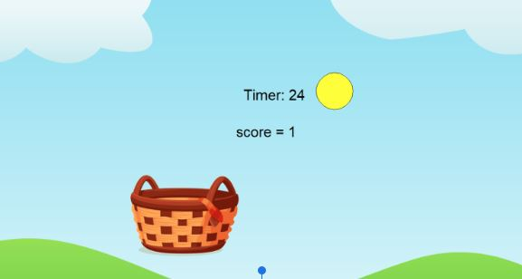
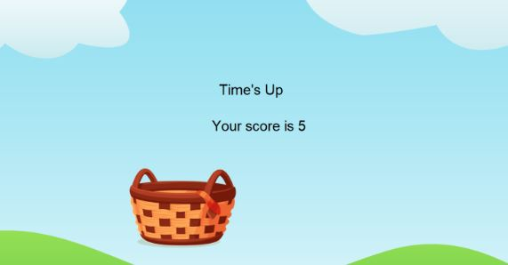

This is my Portfolio Page!

1.1 Cake Maker

This project lets you choose different ways to make a cake, like the number of layers and the color of the frosting, even cake flavors like chocolate and vanilla. All shapes were created by hand and uses input commands to create the cake.
1.2 Catch-Them-All

The Catch-Them-All project is about catching colored circles into a basket to increase the score. You can use the right and left keys using a and d to move the basket under the circles. The score is counted on-screen and after the timer is up,
The score is shown at the end.
Feed the Dino Scratch
Feed the Dino game is about clicking on different types of food to feed the dinosaur and progress to the next level. There are 2 different levels, one with a pterodactyl and the other with a triceratops.
get the score to 30 on each level to pass.
Project 4

Project 5

Project 6